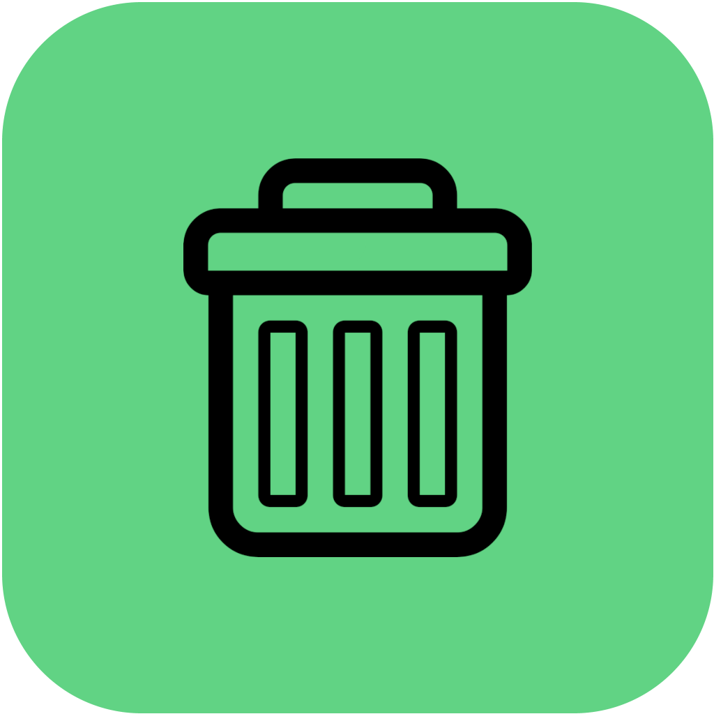

Instrukcijas
- Atļaut piekļuvi atrašanās vietai, ja vēlaties
- Meklētājā ievadīt vai izvēlēties adresi, uz kuru vēlaties doties
- Nospiest
 pogu, lai saglabātu adresi uz kartes
pogu, lai saglabātu adresi uz kartes
Lai iegūtu pilnvērtīgu pieredzi atļaujiet pārlūkprogrammai piekļuvi jūsu atrašanās vietai - Punktus var nodzēst uzspiežot uz tiem un uz  pogas
- Izvēlies savu ceļu iekļaujot tajā veloceliņus, kas ir iezīmēti kartē ar violetu krāsu, un iegūsti patīkamāku braucienu!
- Ja vēlaties izmantot gaišo režīmu, variet uzspiest uz
 pogas un ar šo pašu pogu variet tikt atpakaļ uz tumšo režīmu
pogas un ar šo pašu pogu variet tikt atpakaļ uz tumšo režīmu